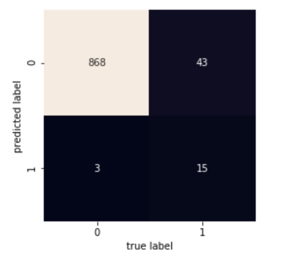

Past Projects
Getting to the Pros: Predicting NFL Success from College Statistics
In this project, I sought to analyze the college and NFL statistics of recently drafted pro players to explore the relationship between college success and pro success. While college statistics are viewed by many as a good indicator of next-level potential, this assumption does not always hold true. As a result, I'm interested in exploring the relationship between performance at the college level and performance at the professional level. Due to the vast amount of data, shifts in gameplay and draft methods over time, and limitations on data availability, I will limit the scope of this analysis to the decade from 2005 through 2013. Additionally, I will also be limiting this project to tackling only the running back position: as a fan of the Detroit Lions, this position is of particular interest to me, as many fans are calling for the team to draft a running back during this year's (2018) draft while disagreeing on which one to take and in which round.
Research Questions:
- Does having good college statistics imply a higher likelihood of success in the NFL
- Does this relationship differ for players who played against ‘top’ college football competition vs. those who played against second and third-tier competition?
- Does having better college stats always lead to better draft position?
- What statistics are better predictors of making a successful transition to the NFL?
Techniques & Findings:
- Q1: Predicting NFL Draft Position & Success
- Correlation & OLS Regression (Non-normalized & Z-Score Normalized Data)
- Best Model: DrAV ~ CFB Rush TD + CFB Rush Yards + CFB Receptions + CFB Rush Fumbles
- Predict DrAV, or the Approximate Value of a player for the team that drafted them (DrAV calculated by Pro Football Focus)
- R-Squared: 0.117
- Classification (Random Forest & Naïve-Bayes):
- Best Model - Draft Round Classifier (Random Forest)
- Predict round player is drafted in based on college stats
- Accuracy: ~39.58%
- Other Techniques used:
- Dimensionality Reduction (Principal Component Analysis)
- K-Means Clustering (for draft rounds)
- Conclusions:
- After much analysis, I was unable to reliably predict any NFL statistics from a player's statistical performance in college. Since my intention with this analysis was to use these models to predict NFL success/draft position for players, I conclude that my two datasets are ultimately not related enough to be able to accurately make these predictions, at least without more features.
- Q2: Statistics That Are Better Predictors of Reaching the NFL
- Classification (Random Forest & Naïve Bayes):
- Best Model - Pro Prediction Classifier (Random Forest)
- Predict if a player will be drafted based on college stats
- Accuracy: ~95.05%
- Confusion Matrix: 
- Logistic Regression
- Model: wasDrafted (Dummy variable) ~ CFB Rush Attempts + CFB Rush Yards + CFB Rush TD + CFB Rush Fumble + CFB Receptions + CFB Receiving TD + Conference Level
- 10-fold cross validation average accuracy: ~94.8%
- Conclusion:
- Checking the p-values of the independent variables included in the regression model, we see that all but receptions are below the threshold of 0.05. As a result, we can reject the null hypothesis and conclude that the other 6 independent variables - Number of rushing attempts, number of rushing yards, number of rushing touchdowns, number of rushing fumbles, number of receiving touchdowns, and their conference's competition level - have a significant influence on the dependent variable (whether the player was drafted or not). In conclusion, by analyzing the feature coefficients, we can say that the RB prospects most likely to be drafted are those playing in the Power 5 Conferences with high rushing yards and touchdowns and low number of fumbles on a low number of attempts, and a high number of catching touchdowns.